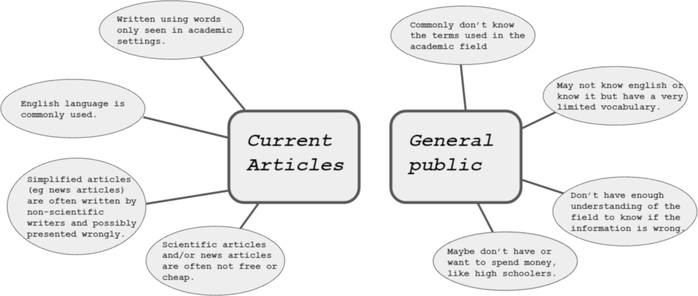
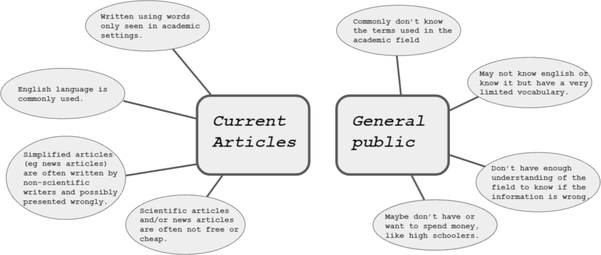

Team:Chalmers-Gothenburg/mis
Partnership
Establishing long term connections and collaborations are important everywhere; both at personal level and at industry level. Even in iGEM this can prove to be useful and help teams progressing in their projects, pushing each other along the way. Those long-term collaborations - which iGEM usually refer to as partnerships - can come in many forms; from helping coming up with ideas, to do lab work and help with each other's projects, to developing software's in joint aim.
Continuing on the partnership with Team:UNILausanne (Switzerland) which started with our respective previous teams 2020, we and UNILausanne have worked together to make science in all its nature easier accessible and understandable for the general public, as independently of where one lives as possible. While this is no easy task and can be done in several ways the aim of this partnership is reach people through their own languages by recognising the many different languages our teams knows and thus translation capabilities.
On this page a description of our partnership with Lausanne and what we done can be found.
Continuing on the partnership with Team:UNILausanne (Switzerland) which started with our respective previous teams 2020, we and UNILausanne have worked together to make science in all its nature easier accessible and understandable for the general public, as independently of where one lives as possible. While this is no easy task and can be done in several ways the aim of this partnership is reach people through their own languages by recognising the many different languages our teams knows and thus translation capabilities.
On this page a description of our partnership with Lausanne and what we done can be found.
Team:UNILausanne and Us
In 2020 both Lausannes and our predecessors started a partnership with the aim to make science more accessible for the general public.
How they started the partnership and what they accomplished their year can be read about
here and here.
Making science understandable and accessible for the general public is hard and there already exist several blogs and attempts to accomplish this.
Though, most lack one thing; diversity in language. This on the other hand is why our partnership with Lausanne can contribute.
Being a Swedish and Swizz team, both with international students, we cover several different languages.
Thus, by writing in English both teams can translate the content to respectively known language in the teams and thus reach more people; people who else may have trouble understanding English.

Read more about us on the blog!
What is the Transcriptome?
Scientific reports are usually written in English, using complex vocabularies only understandable for those in or closely related to the reports scientific field. Thus, most people that actually can read an article needs to have a basic understanding or background in the articles main subject before reading it.
Of course, if you would have an academic background, you are probably used to reading articles and can probably get through it, hopefully understanding bits and pieces.
But it would take more of an effort to read it and probably more resources and articles that can help you decipher the meanings of each sentence.
Worse though would be if you had no academic background and possibly no affiliation except interest. Then the actual content would be somewhat gibberish.

The transcriptome is a blog which is hosted by team:UNILausanne and team:Chalmers-Gothenburg in a joint partnership which aims to write blog posts about scientific subjects; posts which are easy to understand for anyone with enough interest to read it. To actually accomplish this, it is important to realize some key issues with how science is mostly displayed currently:
On the transcriptome we post about various scientific topics. While most posts stay true to our teams’ background, synthetic biology, there have also been topics such as biology, math, diseases and their origin. At the transcriptome we try to keep it simple, yet in-depth and broad, including as many readers as possible wherever they might come from.
Read more about the blog on our blog

The transcriptome is a blog which is hosted by team:UNILausanne and team:Chalmers-Gothenburg in a joint partnership which aims to write blog posts about scientific subjects; posts which are easy to understand for anyone with enough interest to read it. To actually accomplish this, it is important to realize some key issues with how science is mostly displayed currently:
- Scientific articles are difficult to read and understand, mostly due to concepts and vocabularies not being properly explained in the articles.
- Scientific articles are mainly written in English, leaving most people unable to read it properly.
- While papers such as newspapers sometimes report on scientific findings in more casual text, they are usually written by someone probably not affiliated with the field and possibly not portraying it as good as it could be and ...
- such posts are often not free to read.
On the transcriptome we post about various scientific topics. While most posts stay true to our teams’ background, synthetic biology, there have also been topics such as biology, math, diseases and their origin. At the transcriptome we try to keep it simple, yet in-depth and broad, including as many readers as possible wherever they might come from.
Read more about the blog on our blog
What did we do?
First and foremost, we have continued on our predecessors' wish to keep posting and keep the blog for as many people as possible by translating to as many languages as we possibly could. To this end the different languages now available in the blog are English, Swedish, French, Spanish, Polish, Dutch, Italian, Chinese (both traditional and simplified) where our team has published in English, Swedish and Chinese which are our known languages. Additionally, we have reached out to other teams using the iGEM slack asking for blog posts in the teams native languages, making use of that iGEM is an international competition with teams all around the world covering most languages.While posting and translating on the blog was both our and Lausannes main objective, we also recognised that more should be done with the blog to accomplish our objective of spreading science. A post won't do much if for instance no one reads it, as such we had made an extended effort to spread the name of the blog and draw readers in. For each blog post we have also made a post on our social media channels reaching thousands of people. We have also made flyers containing information and links to the blog which we have distributed e.g. during our school visits. Additional flyers were handed out to the science teachers so that they could further distribute them to science classes we were unable to hold lectures for. These flyers were also distributed within our campus.

Our posts
Throughout the year we have published several blog posts on the Transciptome. Below are some of them, the rest including Lausannes and other teams posts can be found here!Using protein scaffolds to control metabolic flux
Author: Christer Edvardsson
In this blog post I will talk a little bit about how protein scaffoldings can be useful for controlling metabolic flux.
The metabolism of cells is essentially a large network of coupled chemical reactions that are (mostly) catalyzed by enzymes.…
Read more
Read more
100 years with antibiotics
Author: Lina Andréasson
Short about antibiotics Most of us have sometime had the need to take antibiotics to get rid of some bacterial infection.
Antibiotics work by killing bacteria or preventing them from spreading. There are a lot of different types of antibiotics,
and they work through different mechanisms. There…
Read more
Read more
Cancerous Tumours and where to find them
Author: Robin Nilsson
In this post I will answer two questions you possible might have after reading the title of this blog post; Yes, the title is a play on the movie title “Fantastic beasts and where to find them” which btw is an…
Read more
Read more
Math in practice: Flux Balance Analysis (FBA) – “Simple” math with important biochemistry applications.
Author: Robin Nilsson
Maybe I am a bit biased, being a mathematician and all, but math tends to be absolutely everywhere in science. Be it economics, physics, chemistry,
computer science, earth science or as you may have guess by the name of the article, biochemistry. One of many strengths of mathematics lies in its…
Read more
Read more